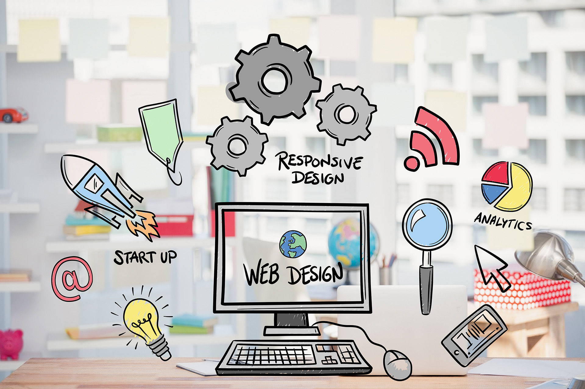

Les expériences professionnelles
- Développeur Web Freelance
- Développeur Web Front-End confirmé avec une forte expérience en responsive design et accessibilité
- Développeur Web Back-End spécialisé en sécurité des données et intégration de systèmes tiers
- Attitude d’apprentissage continu et de développement personnel
- Personnalisation de sites web pour répondre aux besoins des clients et à leur image de marque
- Conception et développement de sites web pour les clients variés en utilisant des langages de programmation Front-End tels que HTML, CSS et JavaScript sur-mesure
- Planification et gestion de projet.

Points forts et Centres d’intérêt
- Fiable et rigoureux
- Réactif et toujours à la pointe des dernières technologies
- Enthousiaste et curieux
- Respect scrupuleux des délais
Je suis un amateur de découvertes et jeux vidéo, passionné par les langues étrangères et les nouvelles technologies.

Contact
Pour toute question ou demande de renseignements, merci de me contacter par email ou par téléphone au numéro ci-dessous.